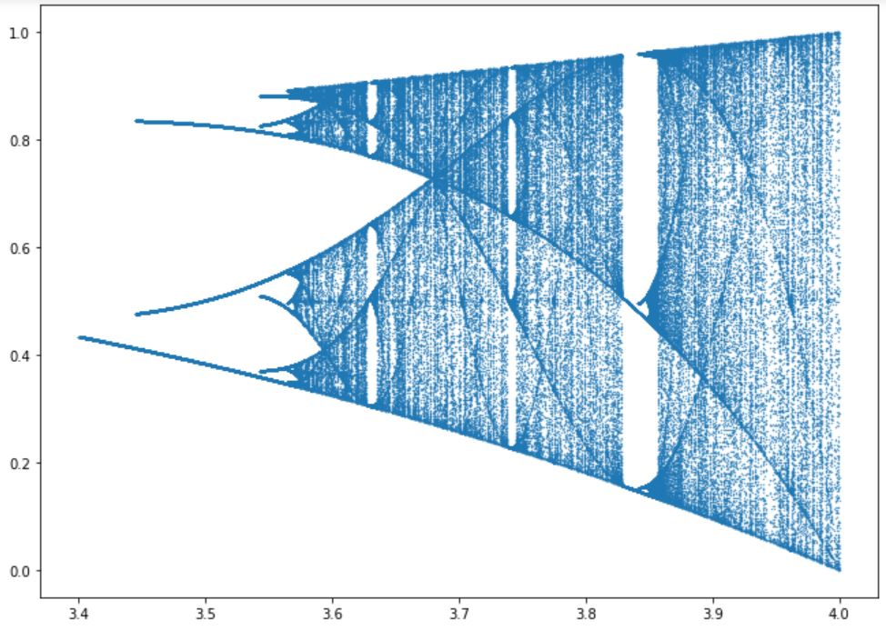

← Miscellaneous
This object was my first introduction to chaos and, for a good explanation, I will refer to its wiki page. I highly recommend checking it out. The python script (which you can download here) simply draws it.
